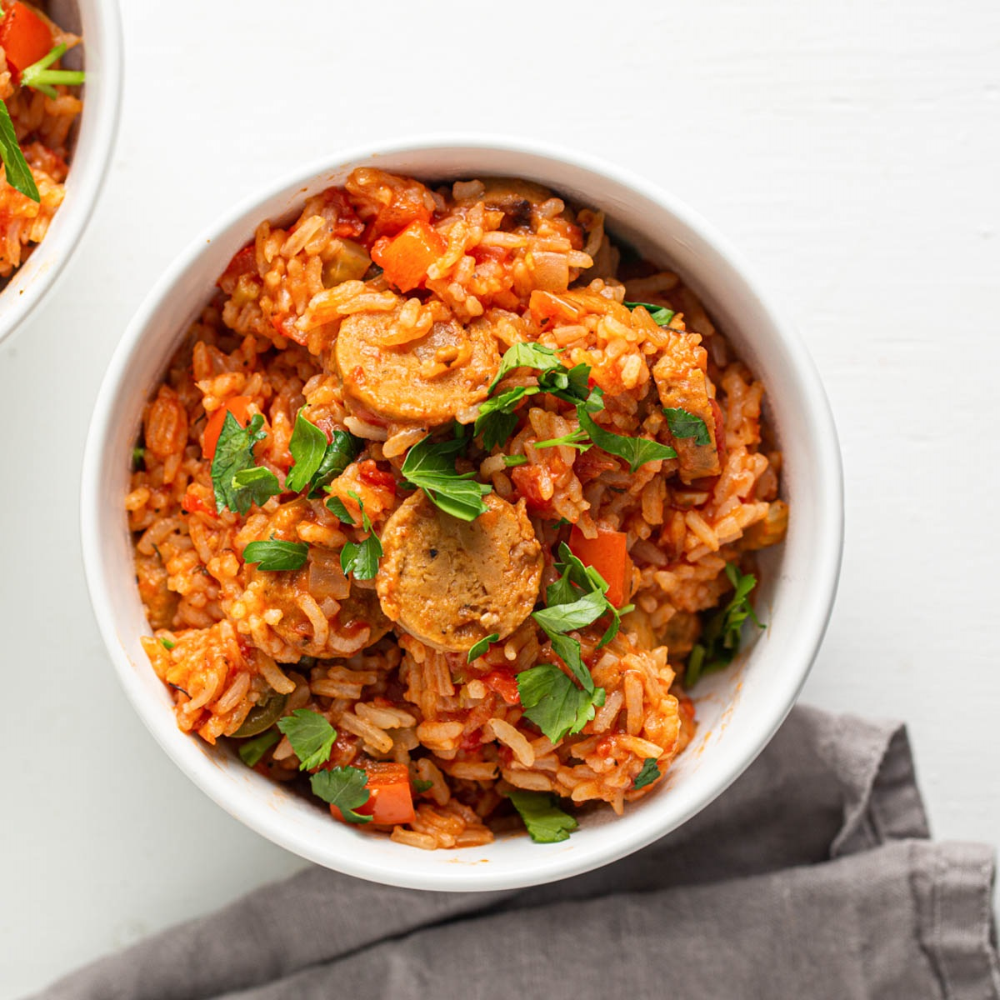

"Discover our range of delicious vegan recipes. From veggie-packed mains and vegan party food to dairy-free desserts, we've got everything you need for a plant-based feast"

Vegan jambalaya
Enjoy a delicious plant-based dinner with this vegan rice and bean one-pot. It's packed with all five of your 5-a-day, as well as iron, vitamin C and fibre.
Cook this tasty vegan curry for an exotic yet easy family dinner. With spinach and sweet potato, it boasts two of your five-a-day and it’s under 400 calories.
Rustle up this healthy vegan celeriac and hazelnut soup as a starter on Christmas Day. Truffle oil adds a bit of luxury, or leave it out for a simple supper on a winter's night.
Use a tofu substitute to make this addictive crispy fried ‘chicken’. Try this delicious vegan party food with BBQ sauce, or in a bun with salad or coleslaw
Make this decadent vegan sandwich using veggies and hummus with an Asian dressing and hot sauce all stuffed inside a baguette. Great for a filling lunch.